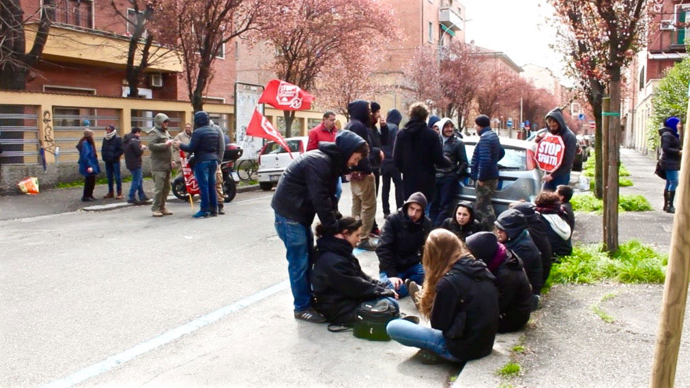
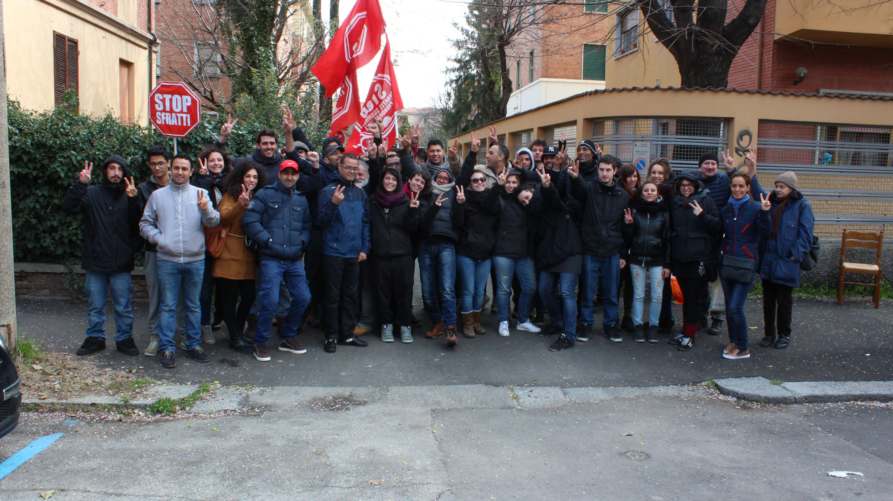

Il picchetto antisfratto
Il picchetto antisfratto consiste in un’azione collettiva messa in atto per aiutare famiglie o individui che, avendo ricevuto la notifica di sfratto, non sono ancora state in grado di trovare una soluzione abitativa che sia alternativa alla strada.
Questa azione viene organizzata al fine di impedire all’autorità giudiziaria di eseguire lo sfratto nel giorno prefissato, consentendo quindi all'inquilino di rimanere più tempo nella casa per trovare una soluzione lavorativa che gli consenta di riprendere a pagare l’affitto oppure in alternativa accedere a una delle soluzioni istituzionali messe a disposizione per l’emergenza abitativa.
Le dinamiche del picchetto antisfratto sono tanto intuitive quanto singolari.

Tanto per cominciare, non esistono coordinate temporali precise: in parole povere, si conosce solo il giorno in cui verrà effettuato l’accesso, mentre l’orario può ricoprire l’arco dell’intera giornata, a partire dalle 6 del mattino fino alle 19 di sera. Nel corso di questo periodo di tempo, l’ufficiale giudiziario può arrivare in qualsiasi momento, e questo implica che tutte le persone intenzionate a partecipare al picchetto debbano presenziare sin dal mattino presto.
In vista della lunga attesa, solitamente vengono portati the, caffè e anche qualcosa da mangiare per rimanere svegli e supportarsi a vicenda.
Al momento dell’arrivo dell’autorità, tutti i presenti si interpongono tra questa e la porta di casa dell’inquilino, impedendo fisicamente il passaggio e, di conseguenza, l'effettiva esecuzione dello sfratto.

A questo punto, l’ufficiale giudiziario non può far altro che prorogare la permanenza dell’inquilino, fissando sul momento un’altra data d’accesso, solitamente a non più di 2-3 mesi di distanza.
